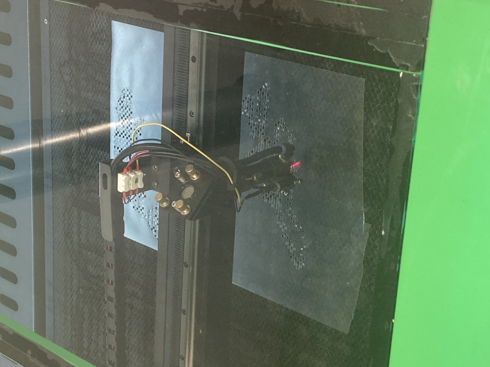

this project explores the intersection between human beings and technology. using various machine processes such as photoscanning and laser cutitng to eteranlise a human being.



this work was shown alongside the "data_vision" work in the "Two Channels" exhibition.
return